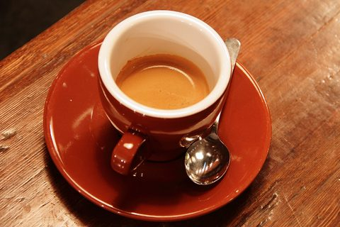
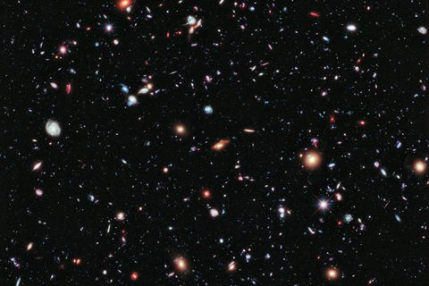
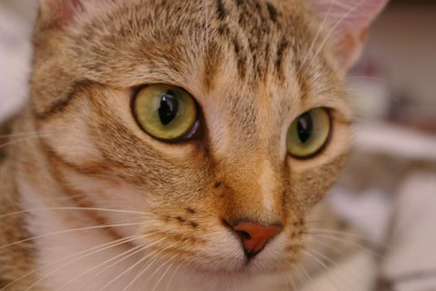

Where there is no headroom
A pale face and a white suit are already near the top of the range, so the sheen has almost nowhere to go. What form you see comes from the shaded corner.
One movable light drives the shadows, surface sheen, edge highlights and room light.
Move your pointer and the light follows. To place it with a click instead, open Tune.
<link rel="stylesheet" href="cast-shadow.css">
<script type="module" src="cast-shadow.js"></script>
<div data-cast>…</div>What it does
One light for the whole page, set with five properties.
:root {
--cast-light-x: 50%; /* percentages, px, vw and vh all work */
--cast-light-y: 0%;
--cast-light-z: 600; /* height above the page, unitless px */
--cast-light-size: 350; /* width of the source, unitless px */
--cast-light-color: var(--cast-6500k);
}
--cast-light-x and --cast-light-y place the
light in the viewport. On this page it follows your pointer, and every
shadow, sheen and rim turns to face it.
--cast-light-z is how far the light sits above the page.
A low lamp throws long, soft shadows. A high one throws short, tight
ones.
--cast-light-z: 400 — a low lamp--cast-light-z: 1600 — high overheadIt is the width of the source, so it changes how soft a shadow is without touching where it falls. Soft interface shadows imply a very large source, which is why the default is bigger than it first looks.
--cast-light-size: 90 — a small, hard source--cast-light-size: 900 — a broad, overcast one
--cast-light-color takes any colour, so a hex or an
oklch() works. The Kelvin scale ships as named constants,
computed from the Planckian locus and normalised so the brightest
channel is 1 — they set hue, not brightness.
:root {
--cast-light-color: var(--cast-2700k);
}
/* or any colour at all */
:root {
--cast-light-color: #ffb870;
}A pool centred on the lamp falling off to a vignette at the edges. Works on the page or on any element. This page is in room mode — the background follows the light.
<body data-cast="room">
<section data-cast="room">…</section>.hero {
--cast-room-reach: 900; /* pool radius, px */
--cast-grain: 0.2; /* dither strength */
--cast-grain-size: 280; /* dither scale, px */
}background-image — it composites over whatever
backgrounds you already have. It does use both pseudo-elements, so it
cannot share an element with surface. Put room on the
container and surface on its contents.
What it does
All opt-in through the same attribute, and they compose where it makes
sense: data-cast="surface edge" applies both.
Give anything a height above the page. Higher objects throw longer, softer shadows, and both come from that one number.
.card { --cast-elevation: 20; }
.dialog { --cast-elevation: 80; }Nothing but data-cast. The shadow follows the border box
and respects border-radius.
<div class="chip" data-cast></div>Avatars, buttons and inline chips want low elevations. A button that floats 40px off the page reads as a mistake.
Lighting, stage & screen
For a light at height H and an object at height
h, sitting a horizontal distance d from the
light, shadow offset is similar triangles and nothing more:
offset = d × h / (H − h)
Two things fall out for free. An object at h = 0 gets no
offset at all — flat on the page means no throw. And an object
directly beneath the light gets no offset at any height.
That same h / (H − h) factor is the penumbra ratio, so
blur comes from one multiply rather than a tuned curve. Two objects at
the same height share a blur wherever they sit on screen, which is
what makes a layout read as one lit scene rather than a pile of
separate shadows.
Height above the page, in px. Rough guide:
| Range | Suits |
|---|---|
2–8 | Pressed states, inset panels, hairline lift |
12–24 | Cards, buttons, tiles |
40–64 | Dropdowns, popovers, tooltips |
80–120 | Modals, sheets, anything that owns the screen |
--cast-length. Shadow throw is derived, not
set. If a shadow is the wrong length, change the object's height or
the light's.
For a cutout PNG or an SVG, shape swaps
box-shadow for drop-shadow so the shadow
follows the alpha silhouette instead of the box.
shape<svg data-cast="shape">…</svg>filter creates a stacking context and a
containing block, so any position: fixed descendant will
anchor to this element instead of the viewport. It also costs more to
paint and has no spread. Don't use it on opaque images — a
.png photo has no transparency, so the box is already
correct and cheaper.
A sheen angled toward the light and shading away from it, plus fine grain. This is what stops an element reading as a flat rectangle with a shadow stuck under it.
surface<div data-cast="surface">…</div>
/* tune per element */
.panel {
--cast-sheen: 0.14; /* lit edge */
--cast-shade: 0.09; /* unlit edge */
}d / (H − h), zero straight overhead and clamped
at 45° — and --cast-sheen-reach follows
--cast-light-size, so a hard source draws a tight
falloff and a soft one a gradual wash. Drag height
in the tuner and watch the modelling change with the shadow instead
of sitting still. Measured on a mid-grey tile at
d = 250, sheen spread runs
19.4 levels at H = 200 and
3.4 at H = 1600.
d = 0 the direction vector is zero, so the
gradient angle means nothing; the sheen used to run at full strength
there, aimed nowhere. Now the gradient fades as the light comes
overhead, and an even wash takes its place. Put the pointer right on a
card to see it. The rim turns even too: on a solid card it's a bevel tilting
away from the lamp, so it sits just darker than the face
(−6.7); on glass, light through the pane lights
the edge from inside, so it glows (+22.6, where it used
to fall to 0.0).
0.14 over #fcfbf9 moves it 0.2 ΔL*, while
black at the same alpha moves it 35. So a pale panel is modelled
almost entirely by --cast-shade and a dark one by
--cast-sheen, and one pair of values holds up in both.
z-index: -1, behind the element's content — so a photo
filling a card covers it completely. Measured spread across such a
card face is 0. Lift it with
--cast-surface-z: 2, at the cost of tinting whatever it
crosses. With edge on as well, the same number lifts the
rim; see Photos and media.
A hairline lit on the side facing the light and shaded on the side away from it. Two inset shadows reusing the vector already on the element. It is the cheapest thing here and does the most for the illusion.
edgesurface edge<div data-cast="surface edge">…</div>
.panel {
--cast-edge-width: 1;
}176 → 216 → 171 → 246 with a border
and 179 → 171 → 221 → 245 without: two contrast
reversals inside 2px, versus one clean ramp. It reads as a
misregistered stroke. Every card on this page sets
border: 0 where edge mode is on.
d = 250 it runs 45.3 levels with
the light at H = 200 and 7.6 at
H = 1600. As it fades, an even ring takes over
in --cast-edge-overhead: just darker than the face on a
solid tile, whose bevel tilts away from an overhead lamp, and lit on
glass. Distance fade stays
off: a broad soft area crossing a fade threshold reads as light, a
hairline reads as flicker.
shape: inset
follows the border box, and shape mode clears box-shadow
outright.
z-index for it — it is not a layer. On a
card with a full-bleed photo the rim measured
1–3 levels of luminance, which is nothing.
Adding surface fixes it: the rim moves onto surface
mode's layer and rides --cast-surface-z with the sheen,
measuring 23–68 lifted. At the default
-1 it paints in the same place as before, so nothing
changes for a card whose own background shows. Want a lifted rim and
no sheen? Add surface and set --cast-sheen
and --cast-shade to 0.
Images run full bleed, so both the sheen and the rim would be hidden
behind them. These lift both with --cast-surface-z: 2,
which puts the modelling over the photo where the light would
actually fall. The rim does most of the work here — a photo brings
its own detail, so a soft gradient over it stays quiet while a
hairline at the border reads immediately. The three are picked for
luminance: a bright portrait, a mid-tone cup of coffee, and a nearly
black field of galaxies.
A pale face and a white suit are already near the top of the range, so the sheen has almost nowhere to go. What form you see comes from the shaded corner.

Around the middle of the range there is room to move in either direction, so the sheen and the shading both read. This is the easy case.

Mean luminance under 20. The shaded end has nothing left to take away, and the lit end is the only one you can see — the exact inverse of the portrait.
<article class="card" data-cast="surface edge"
style="--cast-elevation: 22; --cast-surface-z: 2">
<img src="…" alt="…">
<div class="body">…</div>
</article>Same photo, same settings, one property different. On the left the modelling sits at its default layer and the image covers it entirely. On the right it is lifted over the photo.

--cast-surface-z: -1 — hidden--cast-surface-z: 2 — lifted5.27:1 to 4.54:1 at 0.07 and
3.92:1 at 0.14 — below AA. Lift it for a
card whose face is mostly photo, and leave
--cast-surface-z alone for a text-heavy one.
Not a mode on its own: a word you add next to surface
when the element's background is translucent. Without it, the grain
gets louder and lighter the clearer the background gets.
surface edgesurface edge glass<div data-cast="surface edge glass">…</div>
/* or write it yourself */
.panel {
isolation: auto;
--cast-surface-z: 2;
--cast-grain-z: 9999;
--cast-edge-lit: color-mix(in srgb,
var(--cast-light-color) 50%, transparent);
--cast-edge-shade: rgb(0 0 0 / 0.45);
--cast-edge-overhead: var(--cast-edge-lit);
--cast-grain-blend: soft-light;
}mix-blend-mode
only blends inside its own stacking context, so the grain's only
backdrop is the element's own background. As that goes transparent,
the blend has nothing to work with and quietly turns into plain
alpha. Measured as the background's alpha falls from 1 to 0, grain
RMS runs 1.01 → 3.05 without glass and
1.00 → 1.36 with it.
soft-light. Under overlay, the library
default, the same fix only gets grain from 3.07 to
2.80: overlay is loud over mid-tones, which is what most
photos are. Behind glass the library can't know the backdrop, so
glass uses soft-light, whose worst case is
half of overlay's.
+18.1 L* in
light mode and −6.4 in dark. Clear, they measure
+2.4 and +2.6.
0.00. So they come up above it too. With all three, the
sheen and grain on an opaque glass tile match an
ordinary one. The cost is the usual one for a lifted layer: it tints
the text.
+80.2 against a card's +76.5, up from
+55.0. Any of it can be overridden with your own class.
backdrop-filter for blur. And CSS clips an element's own
shadow to outside its box, so a clear tile never shows its shadow
through itself the way real glass would.
Use it
Two files, no dependencies, no build step.
<link rel="stylesheet" href="cast-shadow.css">
<script type="module" src="cast-shadow.js"></script><article class="card" data-cast>
…
</article>That is the whole setup. The script starts itself, picks up elements added later, and needs no configuration.
file://.
Opening the page by double-clicking it fails with a CORS error. Serve
the folder instead — python3 -m http.server is enough.
Use it
| Property | Default | What it does |
|---|---|---|
--cast-light-x | 50% | Horizontal position in the viewport |
--cast-light-y | 0% | Vertical position in the viewport |
--cast-light-z | 600 | Height above the page, unitless px |
--cast-light-size | 350 | Source width — the softness dial |
--cast-light-color | var(--cast-6500k) | Tints the lit side only |
| Property | Default | What it does |
|---|---|---|
--cast-elevation | 20 | Height above the page, in px |
--cast-color | 12 14 24 | Shadow colour, as RGB channels |
--cast-alpha-near | 0.34 | Opacity at the light |
--cast-alpha-far | 0.12 | Opacity at maximum range |
--cast-throw-max | 90 | Safety clamp on throw, in px |
| Property | Default | What it does |
|---|---|---|
--cast-sheen | 0.14 | Highlight strength on the lit edge |
--cast-shade | 0.09 | Shading strength on the unlit edge |
--cast-sheen-reach | from light size | Terminator width; 45% at the default source |
--cast-surface-z | -1 | Layer the modelling sits on |
| Property | Default | What it does |
|---|---|---|
--cast-edge-width | 1 | Rim width, in px |
--cast-edge-lit | 30% of the light's colour | Colour of the lit rim |
--cast-edge-shade | rgb(0 0 0 / 0.34) | Colour of the shaded rim |
--cast-edge-overhead | 29% of the shade colour | Rim colour with the light straight above |
| Property | Default | What it does |
|---|---|---|
--cast-room-reach | 900 | Radius of the lit pool, in px |
--cast-room-light | 5% of the light's colour | Colour of the pool |
--cast-room-dark | rgb(0 0 0 / 0.05) | Colour of the vignette |
--cast-grain | 0.2 | Grain strength |
--cast-grain-size | 280 | Grain scale, in px |
--cast-grain-blend | overlay | How the grain composites |
--cast-grain-z | -1, 9999 on body | Layer the grain sits on, in room and surface mode |
--cast-grain-image | fractal noise | Set to none to drop it |
Three unitless numbers per element. It makes no styling decision.
| Property | Range | Meaning |
|---|---|---|
--cast-ux | -1 to 1 | Horizontal direction away from the light |
--cast-uy | -1 to 1 | Vertical direction away from the light |
--cast-d | px | Horizontal distance from the light |
Only needed if you want to configure something.
import { castShadow } from './cast-shadow.js';
const shadows = castShadow({
selector: '[data-cast]', // which elements to track
root: document, // subtree to watch
light: { x: '20%', y: '10%' }, // overrides the CSS properties
maxDistance: null, // null = viewport diagonal
});
shadows.setLight('80%', '0%'); // move the light
shadows.refresh(); // re-measure after a layout change
shadows.destroy(); // remove listeners and propertiesx and y are JavaScript's business but
z is not. Height lives in CSS with elevation, because
they have to be in the same unit space for the projection to mean
anything.
scrollX and scrollY a single time and does pure arithmetic — no layout reads, no thrash.
IntersectionObserver skips anything offscreen, so a page with a thousand elements computes the dozen in view. Writes are skipped when a value hasn't changed.
prefers-reduced-motion the script stops writing and the stylesheet falls back to a static shadow. The same applies if the script never runs at all.
refresh() on that container's
scroll.
box-shadow
draws behind its own element. There is no occlusion and nothing
catches a shadow cast by a neighbour. This is a lighting effect, not
a renderer.
Needs @property, atan2(),
color-mix(), IntersectionObserver and
ResizeObserver — Chrome and Edge 111+, Safari 16.4+,
Firefox 128+. Older browsers ignore the custom properties and fall
back to the static shadow.